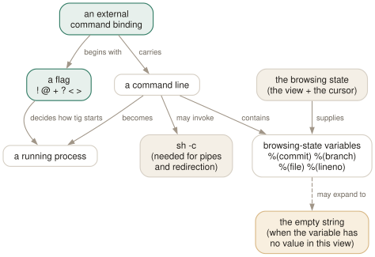

Day 13
External commands
Command flags, plus your browsing state substituted in.
By the end of today you can
- choose the right flag for a command: foreground, background, one line, or confirm first
- substitute the commit, branch, file or line under the cursor into a shell command
- know which variables are empty in which views, and why that fails silently
The extension point
This is where tig stops being a viewer and becomes a place you work. A binding whose action starts with a flag character runs an arbitrary command, with the commit, branch, file or line under your cursor substituted into it. Five lines of config and tig is a code-review tool shaped like your team's workflow.
You have already used four of these without knowing: C in the main view is ?git cherry-pick %(commit), C in the status view is !git commit, and the refs and stash keys from Day 9 are all of this form.

Six flags, and choosing between them
!- Foreground, output shown, tig waits. The default when no flag is given.
@- Background, no output, tig does not wait.
+- Synchronous; the first line of output goes to the status bar.
?- Ask before running.
<- Exit tig after the command.
>- Reopen tig in the last view after the command.
The choice is almost mechanical once you ask what the command needs:
- Does it want the terminal — an editor, a pager, an interactive prompt?
!. Nothing else will do. - Is it fire-and-forget, with nothing to show you?
@. Copying to the clipboard, kicking off a fetch. - Does it answer a question in one line?
+. Verified: only the first line of output reaches the status bar; the rest is discarded. - Is it destructive or irreversible? Prefix
?. The prompt readsRun `<command>`? [Yy/Nn].
Flags combine, and the combinations are the useful part: ?<git rebase -i %(commit)^ asks first and then exits tig so the rebase owns the terminal; ?> asks, runs, and comes back to where you were.
Browsing state: the holes in the command
Day 1's browsing state is what makes these bindings worth having. The variables are substituted before the command runs, from the current view and cursor position. The dozen worth memorising:
%(commit)- The selected commit ID — the full forty characters.
%(head)- The head the view was opened against. Literally
HEADby default. %(branch)- The selected branch name. Refs view.
%(remote),%(tag),%(refname)- Likewise, by category.
%(refname)includes the remote prefix. %(stash)- The selected stash, e.g.
stash@{0}. %(file)- The selected file.
%(directory)in the tree view. %(lineno)- The selected line number.
%(text)is the line's text. %(prompt)- Ask the user.
%(prompt Enter a name: )sets the wording. %(repo:head)- The checked-out branch name;
%(repo:upstream),%(repo:remote)and%(repo:git-dir)alongside it.
There are about forty in total, including the argument groups (%(revargs), %(fileargs), %(diffargs)) that let a binding re-run tig with the same limits. tigrc(5) has the full list; these are the ones that earn their place in your fingers.
Two worked examples
The clipboard binding, which is the one everybody wants first:
bind generic Y @sh -c "printf '%s' %(commit) | xclip -selection clipboard"
Every part is doing work. @ because there is nothing to show. sh -c because of the pipe. printf rather than echo -n because echo -n is not portable and a trailing newline in your clipboard will bite you. Substitute pbcopy on macOS or wl-copy under Wayland.
And a prompting one, which shows how user input works:
bind main B ?git checkout -b "%(prompt Enter new branch name: )" %(commit)
The prompt text lives inside the variable, the quotes protect a name with spaces in it, and ? gives you a look at the assembled command before it runs. Branch off any commit in your history with two keystrokes and a name.
Today's habit
Add the clipboard binding today — it is the one you will use most, and it retires the habit of selecting hashes with the mouse. Then watch yourself for a week: every time you leave tig to run a command, ask whether it wanted %(commit) or %(file). If it did, it was a binding.
Tomorrow: colours, large repositories, and everywhere this course disagrees with the manual.
New vocabulary
Commands
| Command | Does |
|---|---|
bind <keymap> <key> !<cmd> | Run in the foreground, output shown. |
bind <keymap> <key> @<cmd> | Run in the background, no output. |
bind <keymap> <key> +<cmd> | Run and echo the first output line to the status bar. |
bind <keymap> <key> ?<cmd> | Ask before running. |
bind <keymap> <key> <<cmd> | Exit tig after running. |
bind <keymap> <key> ><cmd> | Reopen tig in the last view afterwards. |
Today's configappend to ~/.tigrc
Copy the full commit ID of the selected commit to the clipboard. Needs a shell because of the pipe, and printf rather than echo -n so no trailing newline is copied. Replace xclip with pbcopy on macOS, or wl-copy under Wayland.
bind generic Y @sh -c "printf '%s' %(commit) | xclip -selection clipboard"
Amend the last commit without leaving tig. The ! flag runs in the foreground and hands over the terminal, which is what lets your editor open properly.
bind main A !git commit --amend
Create and check out a branch from the selected commit, asking for the name first. The prompt text is part of the variable, and ? confirms before anything runs.
bind main B ?git checkout -b "%(prompt Enter new branch name: )" %(commit)
In the refs view only, show the tip commit of the branch under the cursor in the status bar. Bound in the refs keymap because %(branch) is empty everywhere else - and an empty expansion is silent, not an error.
bind refs U +sh -c 'git log --oneline -1 %(branch)'
tig reads this only at startup. Reload without quitting by binding :source ~/.tigrc to a key (Day 12), or check it with tig 2>&1 | head — errors arrive as tig warning: lines before the first view draws.
Drillsdo these in a real terminal, today
Self-check
Answer out loud first, then unfold.
Your binding @git push origin %(branch) works in the refs view and silently pushes the wrong thing from the main view. What happened?
Browsing-state variables that have no value in the current view expand to the empty string, not to an error. In the main view nothing is a selected branch, so the command that actually ran was git push origin — which pushes according to your push configuration rather than failing.
This was verified: a binding echoing %(branch) pressed in the main view writes an empty value and reports nothing. The defence is to bind view-specific commands in view-specific keymaps — bind refs …, not bind generic … — so the key does not exist where the variable is meaningless.
Which flag do you use for git rebase -i, and what goes wrong with each of the others?
!, the foreground flag — it is also the default if you give no flag at all. Interactive commands need the terminal, and ! hands it over and waits.
@ runs in the background with no terminal, so the editor cannot open. + runs synchronously and captures the first line, so an editor would fight for the terminal. The prompt form :!git rebase -i from Day 5 captures output into the pager view, which is equally wrong. Flags combine, so ?! — confirm, then run in the foreground — is a reasonable belt and braces.
You write bind generic Y @echo %(commit) | xclip -selection c and the clipboard ends up containing nothing useful. Why?
There is no shell. tig does not hand the command line to sh, so the pipe is not a pipe — it is just more arguments to echo. Anything involving pipes, redirection, variable expansion or globbing has to run inside an explicit shell.
Write it as @sh -c "printf '%s' %(commit) | xclip -selection clipboard". And prefer printf to echo -n, which is not portable — a trailing newline in your clipboard is exactly the kind of thing that breaks a paste into a commit message.
Why is %(commit) forty characters when the view shows seven?
Because the abbreviated ID is a display choice and the browsing state holds the real thing. tig substitutes the full forty-character SHA — confirmed by echoing it from a binding — regardless of what the id column is showing or what core.abbrev says.
That is the right call for scripting: an abbreviation can become ambiguous as a repository grows, and a command built from a full ID keeps working. If you want a short one in a commit message, abbreviate at the far end (git rev-parse --short) rather than hoping tig gives you one.
Cheat sheet
External commands. The last two lines are where the time goes.
bind <keymap> <key> <flag><command>
! foreground, shows output, waits (the default; use for editors)
@ background, no output + first output line -> status bar
? confirm first < exit after > reopen after
flags combine: ?<git rebase -i %(commit)^
%(commit) full 40-char SHA %(branch) %(tag) %(stash) %(file) %(lineno)
%(prompt Enter a name: ) %(repo:head) %(repo:upstream) %(repo:git-dir)
# NO SHELL: pipes/redirection/globs need sh -c '…'
# an out-of-context variable expands to EMPTY, silently — bind per keymap
Everything through Day 13
Keys
| Key | Does |
|---|---|
| m | Open the main view — the one-line-per-commit list. |
| d | Open the diff view for the selected commit. |
| s | Open the status view: the working tree. S does the same. |
| h | Open the help view: every binding that is live right now. |
| q | Close this view and fall back to the one underneath. Quits if it is the last. |
| Q | Quit immediately, however deep the stack. |
| R | Reload the current view by re-running its git command. |
| v | Show the version — and prove which build you are on. |
| z | Stop all background loading. For when you opened a 200,000-commit history. |
| D | Cycle the date column: default, relative, compact, custom, hidden. |
| A | Cycle the author column: full, abbreviated, email, user, hidden. |
| X | Show or hide the abbreviated commit ID column. |
| G | Cycle the graph in the main view: v2, v1, off. |
| F | In the main view, show or hide the ref labels. |
| # | Show or hide line numbers. |
| ~ | Switch the line graphics between ASCII and the drawing characters. |
| o | Open the option menu: the same toggles, with their current values. |
| jk | Move the cursor down and up. Arrow keys work too, with a caveat on Day 3. |
| Enter | Open the selected line. From the main view, splits and shows the diff. |
| Tab | Move focus to the other view in a split. |
| UpDown | Move to the previous/next entry — in the parent view, even from the child. |
| JK | Same as the arrow keys: next and previous entry. |
| O | Maximise the focused view to fill the display. |
| < | Go back to the previous view state. |
| , | Move to the parent: the parent directory, or the parent commit. |
| Space- | Page down and page up. |
| C-dC-u | Half a page down and up. |
| ] | Increase the diff context by one line. |
| [ | Decrease the diff context by one line. |
| @ | Jump to the next chunk header. Implemented as a search — see today's gotcha. |
| % | Toggle the file filter: show the whole commit, not just the file you came from. |
| W | Toggle whitespace-insensitive diffing. |
| $ | Highlight commit-title text past the conventional width. |
| / | Search forwards. Prompts for a regexp. |
| ? | Search backwards. |
| n | Next match. N for the previous one. |
| : | Open the prompt. |
| H | Jump to the HEAD commit, in the main view. |
| u | Stage or unstage: the file in the status view, the chunk in the stage view. |
| 1 | Stage or unstage the single line under the cursor. |
| 2 | Stage or unstage part of a chunk: from here to the end of it. |
| \ | Split the current chunk into smaller chunks. |
| ! | Revert: throw away the chunk or file under the cursor. Prompts first. |
| M | Resolve an unmerged file with git mergetool. |
| C | Commit. Runs git commit in the foreground, in the status view. |
| t | Open the tree view at the current revision. |
| f | Open the blob view: the contents of the selected file. |
| b | Open the blame view for the selected file. |
| e | Open the file in your editor, at the line under the cursor. |
| r | Refs view: branches, remotes and tags. |
| y | Stash view: the stash stack. |
| L | Reflog view: where HEAD has been. |
| g | Grep view: search file contents. |
| C(refs,reflog) | Check out the branch under the cursor. Prompts first. |
| !(refs,stash,reflog) | Delete the branch, drop the stash, or reset --hard. All prompt first. |
| A(stash) | Apply the selected stash, keeping the entry. |
| P(stash) | Pop it: apply and remove the entry. |
| C-r | Reload ~/.tigrc — once you bind it, as today's config does. |
Commands
| Command | Does |
|---|---|
tig | Open the main view for the current branch. |
tig status | Start in the status view instead. |
tig -C <path> | Run as if started in path. |
tig -v | Print the version and exit. Also reveals the optional features built in. |
tig show <rev> | Open a commit directly in the diff view. |
tig --word-diff=plain | Word-level rather than line-level diffing. |
:42 | Jump to line 42 of this view. |
:2f12bcc | Jump to that commit. |
:goto <rev> | Jump to a revision: a branch, a tag, HEAD~3, %(commit)^2. |
:!git <cmd> | Run a git command and show the output in the pager view. |
:edit | Run an action by name. Any action name works here. |
:q | Run the binding for a key. Same as pressing q. |
:echo <text> | Print a line in the status window. |
:save-display <file> | Write the current screen to a file. |
:set <name> = <value> | Change a setting for this session. |
:toggle <name> | Cycle a setting. :toggle diff-context +3 steps by three. |
:source <file> | Read a config file now. Later lines win over earlier ones. |
:save-options <file> | Write every current setting and binding to a file. |
tig blame <file> | Start in the blame view for a file. |
tig blame <rev> -- <file> | Blame the file as it was at that revision. |
tig blame -C <file> | Blame with copy detection for one run. |
tig show <rev>:<path> | Show a file's contents at a revision. |
tig refs | Start in the refs view. |
tig stash | Start in the stash view. |
tig reflog | Start in the reflog view. |
tig grep <pattern> | Start in the grep view. Takes git grep options. |
tig refs --branches | Limit the refs view to branches. |
tig <rev> | Start the main view at a revision instead of HEAD. |
tig a..b | Commits reachable from b but not a. |
tig b ^a | The same thing, written as a negation. |
tig --all | Every ref, as if all of refs/ were on the command line. |
tig -- <path> | Only commits touching that path. -- ends option parsing. |
tig -n20 --since=1.month | Limit by count and by date. |
tig +42 | Open with line 42 selected. |
git log -p | tig | Pager mode: colourise and navigate any git output. |
tig --stdin | Read a list of commit IDs from stdin. |
:toggle author-display | Cycle a column's display option from the prompt. |
:toggle commit-title-graph | Cycle a non-display column option. |
bind <keymap> <key> <action> | The whole syntax. |
bind generic <key> none | Unbind a key everywhere at once. |
:source ~/.tigrc | Re-read the config without restarting. |
bind <keymap> <key> !<cmd> | Run in the foreground, output shown. |
bind <keymap> <key> @<cmd> | Run in the background, no output. |
bind <keymap> <key> +<cmd> | Run and echo the first output line to the status bar. |
bind <keymap> <key> ?<cmd> | Ask before running. |
bind <keymap> <key> <<cmd> | Exit tig after running. |
bind <keymap> <key> ><cmd> | Reopen tig in the last view afterwards. |
Options
| Option | Does |
|---|---|
show-changes | Whether the working-tree rows appear at all. Default yes. |
show-untracked | Whether the untracked row appears. Default yes. |
reference-format | How refs are wrapped. Default [branch] {remote} <tag> ~replace~. |
split-view-height | Height of the bottom view in a stacked split. Default 67%. |
split-view-width | Width of the right-hand view in a side-by-side split. Default 50%. |
vertical-split | Stacked or side by side. Default auto. |
focus-child | Whether opening a child view moves the focus into it. Default yes. |
diff-context | Context lines around each change. Default 3. |
diff-options | Extra options for the diff view's git show. |
ignore-space | Whitespace handling: no (default), all, some, at-eol. |
diff-highlight | Run git's diff-highlight to mark intra-line changes. Off by default. |
diff-indicator | Show the leading +/- signs. Default yes. |
ignore-case | Search case handling: no (default), yes, smart-case. |
wrap-search | Wrap around the ends of the view. Default yes. |
history-size | Lines kept in ~/.tig_history. Default 500, 0 disables. |
status-show-untracked-files | Show untracked files. Default yes. |
status-show-untracked-dirs | Show the contents of untracked directories. Default yes. |
mailmap | Apply .mailmap. Default yes, whatever tigrc(5) says. |
blame-options | Default options for git blame. Empty by default. |
recurse-tree | Show every file recursively in the tree view. Default no. |
editor-line-number | Pass +<line> to the editor. Default yes. |
grep-view | Columns of the grep view. Adding file-name gives the git grep shape. |
main-options | Default options for the main view's git log. |
log-options | Default options for the log view. Default --cc --stat. |
main-view | Column list for the main view. reflog-view, refs-view and the rest follow the same shape. |
main-view-date | Shorthand: the date column of the main view alone. |
main-view-date-format | A strftime string, when the display mode is custom. |
main-view-id | Shorthand: show the commit ID column in the main view. |
tree-view-file-size | Shorthand: how the tree view shows sizes. |